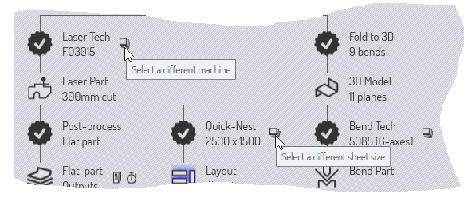

パーツ ワークフロー
TecZone Bendには多くの統合モジュールがあるため、パーツ データが移動する_経路_がいくつもあることが多くあります。
例1 ：フラットパーツデータ（GEOファイルまたはDXFファイルから）をローディングすると、
-
パーツのレーザツーリングを割り当て、他のパーツと一緒に材料に配置して切断できます。
-
曲げ線に沿ってパーツを３Dパーツに折り曲げ、プレスブレーキ用に加工し、曲げ順序の計算ができるようにします。
例2 ： 3 Dサーフェスモデルをインポートする場合（ IGESまたはSTEPファイルから）、
-
表面を解析し、切断が必要な開口部に沿って5軸レーザーCAMツーリングを配置出来ます。
-
フィーチャー認識を行い、サーフェスモデルを材料モデルに変換し、パンチプレスで打ち抜くためにフラットパターンに展開出来ます。
ワークフロー パネル

Workflow パネルは、これらの動きをすべて制御する中央ハブです。パーツが開いている場合、ワークフローパネルを呼び出すには、単にWキーを押すか、コマンドバー左のワークフローアイコンをクリックします。ワークフローパネルを見てみましょう：まず、曲げ加工情報を含む 2D パーツ (GEO ファイルなど) をインポートします。以下が、この時点で表示されるワークフローパネルです：
-
Bend_28.geoから始め、インポートしてクリーンアップして2 D材料パーツを作成しました（パーツ寸法が表示されています）
-
すると、ワークフローに分岐があります。
-
パーツにレーザテックを割り当てられます（これは単に、パーツのコンターにレーザ切断パスを割り当てることです）。
-
平らなパーツを3 Dに折り曲げることができます（ 9つの曲がりが検出されています）。
-
ワークフローノードの拡張：ステージ1
レーザテックアイコンをクリックして、レーザツーリングをパーツに割り当てます。パーツが即座に解析され、レーザ ツーリングが追加されます。次に、「3D に折り曲げる」 アイコンをクリックして、平らなパーツを 3D に折り曲げます。以下は、これらステップ後のワークフローパネルです：

注釈にあるように、ワークフローダイアグラムにはさまざまなタイプののノードがあります。
-
パーツに行えるさまざまな加工を表すパーツビューノードがあります。これらのノードをクリックすると、パーツがその_ビュー_に切り替わり、パーツで実行できる一連の加工がそのビューに表示されます。例えば、レーザパーツに、そのパーツに割り当てられたレーザツーリングを表示し、編集できます。
-
これらのアイコンをクリックすると、これらのビューを切り替えることができます。これらのさまざまなパーツビューにはショートカットキーもあり、ビューアイコンにマウスを合わせると分かります。これらのショートカットキーを学ぶと、 ワークフローを素早くナビゲート出来ます。そのため、しばらくすると、次のようなキー順序を使用することになります。例えば、WBEscで、ワークフローパネルを開き、パーツビューから曲げビューに切り替え、ワークフローパネルを閉じるという順序です。
-
さまざまなプロセスでパーツデータがこれらのノード間に押し入れられます。これらのプロセスは 13 角の星型アイコンでワークフロー パネルに表示されます。たとえば、レーザ テック プロセス (2D パーツを解析し、それにレーザツーリングを割り当てる)を使って、2D パーツ ビューから レーザパーツ ビューに移動します。完了したプロセスには、中にチェックマークが表示されます。まだ完了していないプロセス（でも利用可能な）の中には、十字が表示されます。これらのプロセスノードをクリックし加工を完了します。パーツワークフローのこの段階で、わかる内容をまとめてみましょう。
-
現在利用可能なパーツビューは3つあります（2Dパーツ、レーザパーツ、そして３Dモデルで、その３つを切り替えられます）。
-
さらに4つのプロセスが利用可能です。
-
フラットパーツの後処理が出来ます（これは、レーザ/パンチプレスのオペレーターにとって有用な「フラットパーツレポート」を生成します；通常、このレポートには、レーザ切断時間、パンチプレス用のツーリング設定、およびこのパーツに必要なその他の特殊ツーリング要件が含まれます）。
-
クイック ネスティングを実行し（クイック ネスティング、1つのタイプのみのネスティングです）、材料全体にこのパーツを詰め込みます。これを使用すると、このパーツでいっぱいの材料を作成したり、このパーツのコストや時間を素早く見積もったりできます。
-
このパーツに曲げ加工テク （プレスブレーキツール）を割り当てることができます。
-
このパーツに溶接加工テク （溶接ロボットツーリング）を割り当てることができます。
-

ワークフローパネルのナビゲーション
ワークフロー パネルには、多くの情報と操作がコンパクトな図形形式で表示されます。多くの場合、これはパーツを操作する際の中心的なハブとして機能します。ワークフロー パネルのいくつかのアイコンをもう少し詳しく見て、その使用方法を理解しましょう。
利用可能なプロセスノード
中に + がある 13 角の星は、現在利用可能なプロセスステップを表します。たとえば、2D 平面を 3D パーツに折り曲げたり、レーザ テクノロジ ツーリングの割り当てです。このようなノードにマウスを移動すると、ノードが何をするかを説明するツールヒントが表示されます。

これは、多くの利用可能なプロセス ノードの一般的なパターンです。ノードをクリックすると、初期設定でプロセスが実行されます。ノードのCtrl+Clickをクリックすると、最初に設定ページが表示され、設定を確認/編集した後、プロセスを実行します。たとえば、クイック ネスティング ノードをCtrl+Clickと、以下が表示されます：

クイック ネスティング設定が表示され、ネスティング前にそれを編集できます。
プロセス完了ノード
プロセスが完了すると、ノードは利用可能なプロセスノードからプロセス完了ノードに変わります；アイコンはチェックマーク付きの星になります。この時点で、そのノードに使用可能なオプションが変更します。

これは、完了したプロセスノードで利用可能な一般的な一連のオプションです。ノードをクリックすると、プロセス設定が再び表示され、設定を微調整して加工をやり直すことができます。Ctrl+Click オプションを使うと、通常、プロセスデータを削除出来ます。このオプションを選択すると、削除前に確認のメッセージが表示されます。例えば、完全に加工済みパーツに、3DモデルのCtrl+Clickすると、次のようになります：

補助コマンド
多くのノード近くに小さなアイコンがあり、補助コマンドになっています。これらのコマンドは、そのノードに関するいくつかの機能です。以下はいくつかの例です：
-
各テクノロジーノード近くの補助アイコンを使用すると、通常、別のマシンを選択し、そのツーリングルが可能です。
 -
クイックネスティング ノード近くのアイコンを使用すると、別の材料サイズのネスティングが可能です。
-
出力ノード近くのアイコンを使用すると、プロセス ノードの様々の出力（レポート、NCプログラムまたは時間分析）を表示できます。

ソースファイルのトラッキング

ほとんどの加工は、CADデータ（ 2 Dまたは3 Dのいずれか）をインポートすることTecZone Bendから始まります。このCADデータで作成されたパーツは、TecZone Bend引き続きこれらのソース パーツをトラッキング出来ます。パーツを開くと、TecZone Bendで、そのパーツの作成元となったCAD ファイルがその間に変更されたかを確認できます。変更があった場合、そのパーツは古くなっており、ワークフローパネルで確認できます。
-
ソース パーツ ノード近くのパーツ更新補助アイコンをクリックして、パーツを更新します。TecZone BendでCADジオメトリを再インポートし、 パーツを再構築します。
-
元のCADジオメトリのトラッキングを停止することもできます。たとえば、元の CAD ファイルが取り外し可能な メディアや将来アクセスできなくなるリモート ドライブにある場合に役立ちます。このためには、ソースパーツノード近くのリンク中断補助アイコンをクリックします。こうすると、ソース ファイルのトラッキングを停止するプロンプトが表示されます：

概要
以下にワークフローパネルの原則の簡単な概要です：
-
ワークフロー パネルには、様々なパーツ ビュー (レーザ パーツ、曲げパーツなど) を表すノードと、様々なプロセス (3D への折り曲げ、レーザツールの割り当てなど) を表すノードが表示されます。
-
使用可能な（まだ実行されていない）プロセス ノードは、中にアイコンのある13 角の星です。完了済みプロセスノードでは、星の中にマークがあります。
-
利用可能なプロセス ノードをクリックすると、そのプロセスが初期設定で呼び出されます。使用可能なプロセスノードをCtrl+Clickと、最初にプロセス設定を編集するためのエディタが表示され、その後にプロセスが実行されます。
-
完了済みプロセスノードをクリックすると、プロセス設定を微調整して、プロセスを再度実行できます。完了済みプロセスノードをCtrl+Click と、プロセスデータが削除されます。
-
プロセスノード近くやパーツビューノードの近くにある小さな補助アイコンで、そのプロセスノードの重要なパラメータ（例えば、対象のマシンやネスティング材料のサイズなど）を変更します。